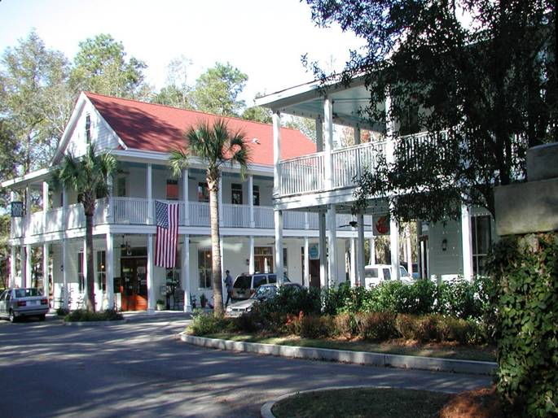
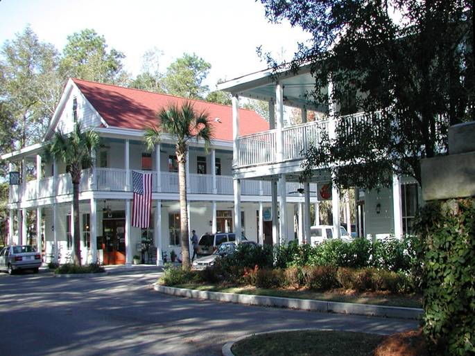

I’On
Located in Mount Pleasant, South Carolina, I’On is a nationally recognized model of New Urbanism. Founded on the principles of traditional neighborhood design, it integrates diverse residential architecture with vibrant public spaces and a village square, creating a timeless Lowcountry community that prioritizes the pedestrian over the automobile.


Newpoint
Situated on the high bluffs of Lady's Island overlooking historic Beaufort, Newpoint was an early pioneer in the New Urbanist movement. This waterfront community replicates the charm of Beaufort’s historic district with narrow, tree-lined streets and front-porch architecture, establishing an enduring standard for coastal civic design.

 

Las Catalinas
A minor investor in Las Catalinas, a thoughtfully planned, car-free town on Costa Rica’s Guanacaste coast. The over 12,000-acre town was designed in the spirit of New Urbanism to foster walkability, community connection, and harmonious integration with the surrounding tropical landscape.


East Beach
A 90-acre waterfront community in Norfolk, Virginia designed and built in the tradition of Atlantic Coastal villages. This development showcases the scalability of traditional neighborhood design along the Chesapeake Bay.


Hammond's Ferry
A 200-acre neighborhood designed to seamlessly connect the city of North Augusta to its roots along the Savannah River. This project represents a commitment to riverfront revitalization through walkable, mixed-use planning.